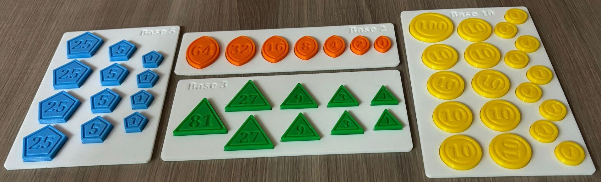

An analog version of this activity can be carried out with physical coins. We provide here STL files to 3D-print some special coins for numeral systems in bases 2, 3, 5, and 10. The coins have a number of sides equal to the base, and a face value equal to powers of the base.
Download